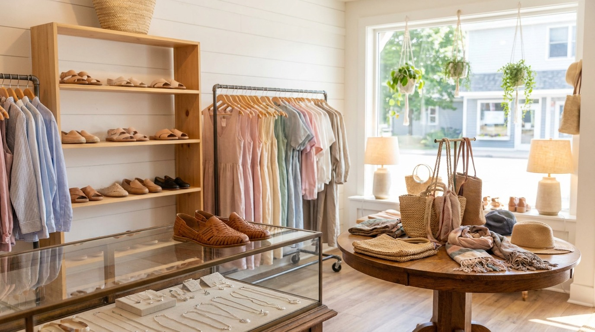
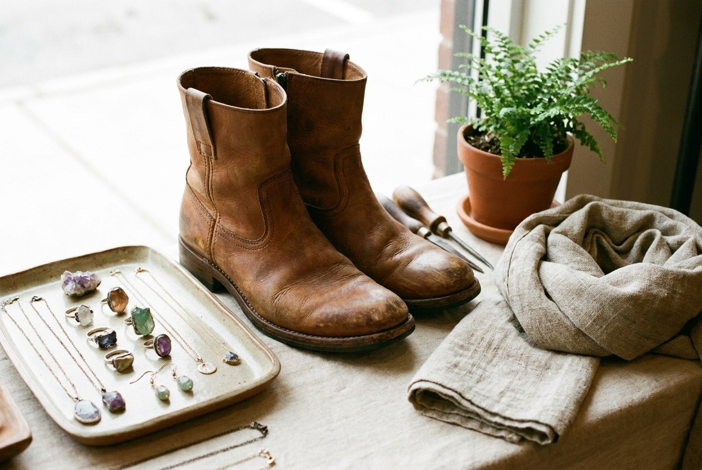

Naot comfort shoes
Footbeds built for real walking, the kind you want after a long day on the Door County trails. We carry Naot because they hold up.

Spring Road · Fish Creek · Door County
What Next? sits on Spring Road in Fish Creek, Wisconsin. Naot comfort shoes, artisan jewelry, and women's fashions, all in one small shop run with a careful eye. Mary's the one who picks what lands on the shelves.
Open seasonally in the heart of Fish Creek. Call ahead to confirm today's hours.
What's inside
A small shop means every shelf gets thought about. Here's what you'll find when you come in off Spring Road.
Footbeds built for real walking, the kind you want after a long day on the Door County trails. We carry Naot because they hold up.
Pieces made by hand, not mass produced. Things you won't see on every other person in town. Easy to ask Mary about where each piece came from.
Clothing chosen for how it actually wears. Comfortable, well made, and picked to mix with what's already in your closet.
Scarves, bags, and the small finishing pieces that pull an outfit together. Good for a gift when you're not sure on sizing.
The little extras worth taking home from a trip. Stop in when you need something thoughtful and don't want the usual souvenir shelf.
Call and ask. We'll tell you what's in stock today and hold something if you're driving up.
Call (920) 868-2993The shop
Fish Creek fills up every summer. People walk the village, find a shop they like, and put it on the list of places to come back to next year. What Next? has been one of those stops for a lot of folks.
The trouble is, when those same visitors get home and go to plan the next trip, there's nowhere to find the shop online. Just a phone number and a Facebook page. This site fixes that. Now anyone planning a Door County weekend can see what's here before they drive up.
Inside, it's still the same small shop on Spring Road. Comfort shoes you can stand in all day, jewelry made by hand, and clothing Mary picks one piece at a time.
See how to find usA look around

Good to know
We're at 9341 Spring Rd, Unit A-10, in Fish Creek, WI 54212. That's right in the village. You can tap "Get directions" anywhere on this page and it'll route you straight there.
We're a seasonal Door County shop, so hours shift with the time of year. The hours listed lower on this page are a placeholder we still need to confirm. The surest move is a quick call to (920) 868-2993 before you head over.
Fish Creek has village parking near the shops on Spring Road, including street and lot spots a short walk away. In peak summer weekends it fills up, so come a little early if you can.
Yes. If you're driving up and want a piece set aside, call (920) 868-2993 and we'll do our best to hold it for you.
We do. Comfort shoes are one of the things people come to us for. Call ahead if you want to check sizes before the trip.
Visit
These times are a sample so you can see the layout. We'll set the real seasonal hours with you before launch.